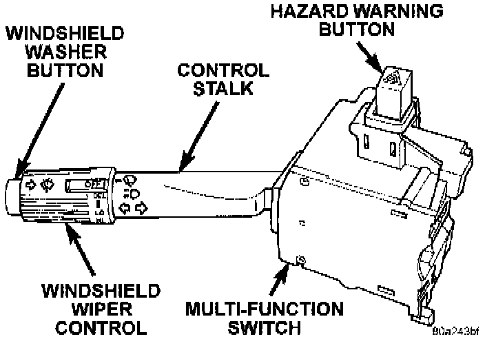

General Description
INTRODUCTIONFollowing are general descriptions of the major components in the wiper and washer systems.
NOTE: This covers both Left-Hand Drive (LHD) and Right-Hand Drive (RHD) versions of this model. Whenever required and feasible, the RHD versions of affected vehicle components have been constructed as mirror-image of the LHD versions. While most of the illustrations represent only the LHD version, the diagnostic and service procedures outlined can generally be applied to either version. Exceptions to this rule have been clearly identified as LHD or RHD, if a special illustration or procedure is required.
WINDSHIELD WIPER SYSTEM
An intermittent windshield wiper system is standard equipment. This system lets the driver select from either of two wiper speeds, or the intermittent wipe mode. The intermittent wipe mode is provided by the Body Control Module (BCM) and an intermittent wipe relay.
The intermittent wipe mode delay times are speed sensitive. Above about sixteen kilometers-per-hour (ten miles-per-hour) the delay is driver adjustable from about one-half second to about eighteen seconds. Below about sixteen kilometers-per-hour (ten miles-per-hour) the BCM doubles the delay time, or provides delays of about one second to about thirty six seconds.
Models equipped with the optional automatic headlamp system have a programmable feature in the BCM that will energize the headlamps automatically, whenever the windshield wipers are turned on. Refer to the proper Computers and Control Systems/Body Control Module/Testing and Inspection Procedures for more information on enabling or disabling this feature.
The windshield wipers will operate only when the ignition switch is in the Accessory or On positions. A circuit breaker located in the junction block protects the circuitry of the windshield wiper system.
WINDSHIELD WASHER SYSTEM
A electrically operated windshield washer system is standard equipment. A reservoir in the engine compartment holds the washer fluid, which is pressurized by a pump when the windshield washer (multifunction) switch is actuated. The windshield washer pump feeds the pressurized washer fluid through the washer system plumbing to the windshield washer nozzles.
Vehicles with the optional Vehicle Information Center (VIC) have a low washer fluid warning feature that will warn the driver when the washer fluid level needs to be checked.
The washers will operate only when the ignition switch is in the Accessory or On positions. A circuit breaker located in the junction block protects the circuitry of the washer system.
REAR WIPER AND WASHER SYSTEM
A rear wiper and washer system is standard equipment on this model. The rear wiper system provides the following operating modes:
- Intermittent wipe with a five to eight second delay between sweeps.
- Continuous fixed-cycle wipe.
- A park mode that operates the wiper motor until the blade reaches its park position when the rear wiper switch or ignition switch is placed in the Off position, or when the liftgate or lift glass (if equipped) is opened.
- A rear washer mode that provides two or three wiper blade sweeps before returning to the previously selected rear wiper switch mode.
A single switch in the instrument panel inboard switch pod controls both the rear wiper and washer functions. The rear washer system shares the reservoir of the windshield washer system, but has its own dedicated washer pump and plumbing.
The rear wiper and washer system will operate only when the ignition switch is in the Accessory or On positions, and when the lift-gate and/or lift glass are closed. The rear wiper motor monitors the lift-gate ajar switch and lift glass ajar switch circuits.
A fuse in the junction block protects the circuitry of both the rear wiper and washer systems.
SYSTEM COMPONENTS
Wiper Arm and Blade
All Grand Cherokee models have two 50.8-centimeter (20-inch) windshield wiper blades with replaceable rubber elements (squeegees). The rear wiper uses a single 30.48-centimeter (12-inch) wiper blade with a replaceable rubber element (squeegee).
Caution should be exercised to protect the rubber squeegees from any petroleum-based cleaners or contaminants, which will rapidly deteriorate the rubber. If the squeegees are damaged, worn, or contaminated, they must be replaced.
Wiper squeegees exposed to the elements for a long time tend to lose their wiping effectiveness. Periodic cleaning of the squeegees is suggested to remove deposits of salt and road film. The wiper blades, arms, and windshield or rear glass should be cleaned with a sponge or cloth and windshield washer solvent, a mild detergent, or a non-abrasive cleaner. If the squeegees continue to streak or smear, they should be replaced.
The blades are mounted to spring-loaded wiper arms. Spring tension of the wiper arms controls the pressure applied to the blades on the glass. The windshield wiper arms are secured by an integral latch to the two wiper pivots on the cowl plenum cover/grille panel at the base of the windshield. The rear wiper arm is secured by a nut under the wiper arm pivot-end cover directly to the rear wiper motor output shaft on the liftgate panel. The wiper arms and blades cannot be adjusted or repaired. If faulty or damaged, they must be replaced.
Wiper Linkage and Pivot
The wiper linkage and pivot module is secured with screws to the cowl plenum panel beneath the cowl plenum cover/grille panel. The wiper motor is secured with screws to the center of the linkage and pivot module bracket. The wiper pivots are secured to the ends of the module bracket.
The two wiper pivot crank arms and the wiper motor crank arm each have ball studs on their ends. The motor crank arm ball stud is the longer of the three. Two drive links connect the motor crank arm to the pivot crank arms.
The passenger side drive link has a plastic socket-type bushing on each end. The driver side drive link has a plastic socket-type bushing on one end, and a plastic sleeve-type bushing on the other end. The socket-type bushing on one end of each drive link is fit over the ball stud on the crank arm of its respective pivot. The driver side drive link sleeve-type bushing end is then fit over the motor crank arm ball stud, and the other socket-type bushing of the passenger side drive link is snap-fit over the exposed end of the motor crank arm ball stud.
The wiper linkage, pivots, bushings, and mounting bracket are only serviced as a complete unit. If any part of this assembly is faulty or damaged, the entire wiper linkage and pivots unit must be replaced. The wiper motor and wiper motor crank arm are serviced separately.
Front Wiper Motor
The two-speed permanent magnet wiper motor has an integral transmission and park switch. The motor is secured to the wiper linkage and pivot module bracket with three screws. The wiper motor output shaft passes through a hole in the module bracket, where a nut secures the wiper motor crank arm to the output shaft.
Wiper speed is controlled by current flow to the appropriate set of brushes. The wiper motor completes its wipe cycle when the wiper/washer (multi- function) switch is turned to the Off position, and parks the blades in the lowest portion of the wipe pattern.
The wiper motor cannot be repaired. If faulty or damaged, the entire wiper motor assembly must be replaced. The motor crank arm and the linkage and pivots module are available for service.
Rear Wiper Motor
The rear wiper motor is secured with two bolts and nuts to a bracket on the liftgate inner panel, below the rear glass and behind the liftgate trim panel. The motor output shaft passes through the liftgate outer panel where a gasket, bezel, and nut, seal and secure the unit to the liftgate outer panel. The rear wiper arm is secured directly to the motor output shaft with a nut.
The rear wiper motor unit contains integral electronic controls that provide the following operating modes:
- Intermittent wipe with a five to eight second delay between sweeps.
- Continuous fixed-cycle wipe.
- A park mode that operates the wiper motor until the blade reaches its park position when the rear wiper switch or ignition switch is placed in the Off position, or when the liftgate or lift glass (if equipped) is opened.
- A rear washer mode that provides two or three wiper blade sweeps before returning to the previously selected rear wiper switch mode.
The rear wiper motor cannot be repaired. If faulty or damaged, the entire wiper motor assembly must be replaced.
Multi-Function Switch:

Front Wiper Switch and Washer Switch
The windshield wiper and washer switches are contained in the multi-function switch assembly. The multi-function switch assembly is secured to the left side of the steering column.
The multi-function switch contains circuitry for the following functions:
- Turn signals
- Hazard warning
- Headlamp beam selection
- Headlamp optical horn
- Windshield wipers
- Windshield washers.
The information contained addresses only the switch functions for the wiper and washer systems However, the multi-function switch cannot be repaired. If any function of the switch is faulty, or if the switch is damaged, the entire switch assembly must be replaced.
Rear Wiper Switch and Washer Switch
The single two-function rear wiper switch is part of the inboard switch pod unit, which is located on the instrument panel just inboard of the steering column. The rear wiper switch controls the rear wiper and washer functions.
The sliding-type switch features a detent in the On and Delay positions. The switch knob is depressed to actuate the rear washer switch, and activate the rear washer system. Both the rear wiper and rear washer motors will operate continuously for as long as the switch is held in the momentary Wash position.
The rear wiper switch cannot be repaired and, if faulty or damaged, the inboard switch pod unit must be replaced.
Body Control Module
A Body Control Module (BCM) is used on this model to control and integrate many of the electronic functions and features included on the vehicle. The BCM contains a central processing unit and interfaces with other modules in the vehicle on the Chrysler Collision Detection (CCD) data bus network.
The CCD data bus network allows the sharing of sensor information. This helps to reduce wire harness complexity, reduce internal controller hardware, and reduce component sensor current loads. At the same time, this system provides increased reliability, enhanced diagnostics, and allows the addition of many new feature capabilities.
Some of the functions and features that the BCM supports and controls are the speed sensitive intermittent wipe, pulse wipe, and wipe-after-wash modes. On models with the optional automatic headlamps, the BCM can be programmed to automatically turn on the headlamps when the windshield wipers are turned on. Refer to the proper Computers and Control Systems/Body Control Module/Testing and Inspection Procedures for more information on enabling or disabling this feature.
The BCM is programmed to energize or de-energize the intermittent wipe relay in response to certain inputs from the multi-function switch and the windshield wiper motor park switch. For the speed sensitive intermittent wipe feature, the BCM also uses an input from the vehicle speed sensor, which is received on the CCD data bus from the Powertrain Control Module (PCM).
The ECM is mounted under the driver side outboard end of the instrument panel, behind the instrument panel support armature and below the outboard switch pod. For diagnosis of the BCM or the CCD data bus, refer to the proper Computers and Control Systems/Body Control Module/Testing and Inspection Procedures. The BCM can only be serviced by an authorized electronic repair station. Refer to the latest Warranty Policies and Procedures for a current listing of authorized electronic repair stations.
Intermittent Wipe Relay
The intermittent wipe relay is a International Standards Organization (ISO) micro-relay The terminal designations and functions are the same as a conventional ISO relay However, the micro-relay terminal orientation (or footprint) is different, current capacity is lower, and the relay case dimensions are smaller than on the conventional ISO relay.
The intermittent wipe relay is a electromechanical device that switches current to the windshield wiper motor or wiper motor park switch when the relay is energized or de-energized by the Body Control Module (BCM) in response to the proper inputs from the windshield wiper (multi-function) switch. See the Diagnosis and Testing for more information on the intermittent wiper relay.
The intermittent wipe relay is located in the Power Distribution Center (PDC), in the engine compartment. Refer to the PDC label for relay identification and location.
Washer Reservoir
A single washer fluid reservoir is used for both the front and rear washer systems. The washer fluid reservoir is secured to the left front inner fender shield, behind the front wheelhouse in the engine compartment.
Each washer pump and motor unit has a threaded nipple, which is installed through a rubber grommet seal inserted in a hole in the bottom of the reservoir. A plastic nut and washer that secures the washer pump nipple from the inside of the reservoir, can be accessed through the reservoir filler neck.
The reservoir also has a provision for a low washer fluid level sensor. The sensor mounts in a hole in the rearward facing side of the reservoir that is nearest to the dash panel.
The reservoir, filler cap, and sensor are each available for service.
Washer Pump
The washer pumps and motors are mounted near the bottom of the washer reservoir. A threaded nipple on the pump housing passes through a rubber grommet seal installed in a hole near the bottom of the reservoir. A plastic nut and washer secures the washer pump nipple from the inside of the reservoir.
A permanently lubricated and sealed motor is coupled to a rotor-type pump. Washer fluid is gravity-fed from the reservoir to the pump. When the motor is energized, the pump pressurizes the washer fluid and forces it through the plumbing to the nozzles.
The washer pump and motor unit cannot be repaired. If faulty, the entire washer pump and motor unit must be replaced.
Front Washer Nozzles and Plumbing
Pressurized washer fluid is fed through a single hose, attached to a barbed nipple on the front washer pump. The hose is routed to a tee fitting located in the cowl plenum area, beneath the cowl plenum cover/ grille panel. Hoses from the tee fitting are routed to the two nozzles, which are snap-fit into openings in the cowl plenum cover/grille panel, below the windshield.
The two fluidic washer nozzles are not adjustable. The nozzles and tee cannot be repaired and, if faulty or damaged, they must be replaced.
Rear Washer Nozzles and Plumbing
Pressurized washer fluid is fed through a single hose, attached to a barbed nipple on the rear washer pump. The hose is routed from the front of the vehicle to the liftgate, with the left side body wire harness.
Above the liftgate opening, the hose connects to a check valve, which prevents washer fluid drain-back or siphoning from occurring. From the check valve, another single hose is routed through holes and grommets in the upper liftgate opening panel and the liftgate inner panel to the washer nozzle. The nozzle is snap-fit into an opening in the liftgate outer panel, above the liftgate glass.
The washer nozzle is not adjustable. The nozzle and check valve cannot be repaired and, if faulty or damaged, they must be replaced.
INTERMITTENT WIPER CIRCUIT OPERATION
In the ACCESSORY or RUN position, the ignition switch connects circuit A1 from fuse 8 in the PDC to circuit A31. Circuit A31 powers circuit F86 through the circuit breaker in cavity 1 of the junction block. Circuit F86 supplies power to the intermittent wiper switch.
When the operator selects LOW speed wiper operation, the switch connects circuit F86 to circuit V3. Circuit V3 powers the wiper motor low speed brush.
When the operator selects HIGH speed wiper operation, the switch connects circuit F86 to circuit V4. Circuit V4 powers the wiper motor high speed brush.
When the operator selects intermittent wiper operation the wiper switch sends a signals to the Body Control Module (BCM) on circuit V51. The BCM determines the amount of delay selected on circuit V5O from the switch.
After determining the amount of delay selected, the BCM periodically energizes the intermittent wiper relay on circuit V18. Circuit F86 from the circuit breaker in the junction block powers the relay coil and contacts. Circuit F86 is HOT when the ignition switch is in the ACCESSORY or RUN position.
When the intermittent wiper relay energizes it powers circuit V6. Circuit V6 connects to circuit V3 through the intermittent wiper switch. Circuit V3 powers the wiper motor low speed brush. Circuit Z2 provides ground for the brush. When not energized, the relay connects circuit F86 to circuit V66. Circuit V66 connects to the park switch in the intermittent wiper motor and the BCM.
REAR WIPER/WASHER CIRCUIT OPERATION
The rear wiper and washer system uses a switch assembly located in the right switch pod.
When the ignition switch is in the ACCESSORY or RUN position, it connects circuit A1 from fuse 8 in the Power Distribution Center (PDC) to circuit A31. Circuit A31 powers circuit V23 through fuse 3 in the junction block. Circuit V23 supplies power for the rear wiper/wash switch.
Circuit A250 from fuse 11 in the PDC powers circuit F70 through fuse 8 in the junction block. Circuit F70 powers the rear wiper motor and the control module located internal to the motor assembly
When the operator selects the ON position, power is supplied through the switch to circuit V13. The V13 circuit connects from the switch to the rear wiper control module.
The module processes this signal and supplies power to the wiper motor. Ground for the wiper motor is supplied on circuit Z1.
When the switch is placed in the DELAY position, power is supplied from the switch to the motor control on circuit V24. The module processes this signal and connects the motor to voltage. The amount of DELAY is controlled by the position of the rear wiper switch.
When the WASH switch is activated, power is passed through the switch to circuit V20. This circuit is double crimped at the switch. One branch of the circuit connects to the rear wiper control module. The other branch connects to the rear washer pump motor.
An additional input to the rear wiper control module is supplied on circuit G78. This circuit is connected to the liftgate and lift glass ajar switches. Circuit G78 signals the control when the liftgate or lift glass opens.
When the liftgate is ajar the wiper control module will not allow the rear wiper or washer to operate.